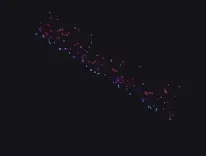
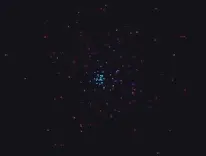
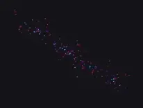

Gnist is a lightweight, easy-to-use 2D particle simulation engine written in vanilla JavaScript with zero dependencies.
Built for real-time visual effects rather than physically accurate simulation, it uses a simplified kinematic model that prioritizes performance. Forces directly influence particle velocity, bypassing mass and momentum calculations.
Gnist is renderer-agnostic. It decouples simulation from timing and rendering, exposing raw state data that can be rendered with Canvas 2D, WebGL, or any custom JavaScript runtime.
While offloading simulation to the GPU could improve raw performance, it would also significantly increase API complexity. Gnist instead performs simulation on the CPU, prioritizing a simple, intuitive programming model and strong single-thread performance. Its architecture is straightforward, object-oriented, and configuration-driven rather than data-oriented. For rendering, however, simulation state can still be exported as flat typed arrays for efficient GPU-based rendering pipelines.
Architecture Concepts
The simulation pipeline revolves around four primary building blocks.
The Engine
The central simulation manager. It owns the shared particle pool, updates particle lifecycles, applies forces and modifiers, and advances the simulation frame by frame using a time delta (dt).
Emitters
Particle generators that spawn particles into the particle pool. Emitters are defined by 2D primitives such as points, lines, rectangles, and ellipses, which determine where particles are born. Configurations and blueprints provide fine-grained control over emission behavior and initial particle properties, with randomized ranges available to create natural variation.
Forces
Environmental influences that directly modify particle velocity over time. Forces can be global, affecting every particle in the simulation (such as gravity or wind) or scoped to particles emitted by a specific emitter.
Modifiers
Rules that update particle properties over their lifetime based on their normalized age.
Path Modifiers alter particle trajectories independently of environmental forces.
Visual Modifiers alter visual properties such as scale, opacity, and color over a particle's lifetime.
Your First Particle System
Rendering with WebGL
Emitters
Emitters are the particle generators of the simulation. Each emitter type is defined by its geometric shape, which determines its emitting area and where newly emitted particles initially appear.
Creating Emitters
To add an emitter to the simulation, you need to instantiate one of the emitter classes, configure it via its constructor, register modifiers and scoped forces with the emitter, and then register the emitter itself with the main Gnist class. Upon instantiating, the emitter is automatically assigned a unique id value if one is not specified.
Configuration
Emitters are configured by a single configuration object passed at instantiation. While most emitter types have their own specialized parameters, they all share a set of core configuration options. Many of the corresponding emitter instance properties are public and can be dynamically updated in real-time within your update loop, while others remain static or are accessed through dedicated API methods.
The common properties of an emitter configuration object and their corresponding emitter instance properties:
Property
Type
Default
Public property
Description
id
string
Auto-generated UUID
Native getter
A unique identifier for the emitter.
enabled
boolean
true
Native getter
Whether the emitter is currently active.
particlesPerSecond
number
100
✔
The number of particles to emit per second.
duration
number
Infinity
The duration of the emitter's emission in seconds, or Infinity for infinite emission.
x
number
0
✔
The horizontal coordinate of the emitter origin.
y
number
0
✔
The vertical coordinate of the emitter origin.
source
Source
Source.VOLUME
✔
The source of particles within the emitter's geometry.
particleBlueprint
object
{}
The blueprint used to define the initial properties of emitted particles.
The source property
The source property of the configuration object is used to control the geometric distribution and default direction of the emission. The latter depends on both the emitter's shape and the source mode and can be overridden by specifying particleBlueprint.direction.
The available modes are properties of the Source constant object:
EDGE_OUT — Emit from the shape's boundary, directing particles outward.
EDGE_IN — Emit from the shape's boundary, directing particles inward.
EDGE_BOTH — Emit from the shape's boundary, directing particles randomly inward or outward.
VOLUME — Emit uniformly from the shape's entire area.
How each of these modes behaves on different emitter types is explained in the Emission Modes section.
Particle Blueprint
The particleBlueprint property holds a simple object used by emitters to initialize particles at emission. This is not the runtime particle state. Apart from color, values can be specified either as a single value or as a [min, max] range array.
Properties of the particleBlueprint sub-object:
Property
Type
Default
Description
rotation
number
0
Orientation angle (in radians).
angularVelocity
number
0
Angular rotation speed (in radians per second).
size
number
1
The visual size or scale factor. Interpreted by the renderer as pixels, radius, or a transform scale.
color
object
{ r: 255, g: 255, b: 255 }
The particle color, defined by individual RGB channels.
opacity
number
1
The visual opacity, from 0.0 (fully transparent) to 1.0 (fully opaque).
lifespan
number
1
The maximum allowed lifespan (in seconds).
speed
number
1
Speed (in pixels per second), used to derive the particle's initial horizontal and vertical velocity.
direction
number
0
Movement direction angle (in radians), used to derive the particle's initial horizontal and vertical velocity.
Example
The example below demonstrates the core configuration options shared by all emitter types (the PointEmitter used here is the only type without any specialized properties of its own).
While Gnist supports both global and emitter-local forces, modifiers are strictly emitter-scoped. You can still register the same modifier instance with multiple emitters, but there is no concept of a "global modifier". This is because forces contribute to a particle's velocity additively, allowing multiple forces to be combined predictably. Modifiers, on the other hand, overwrite particle properties directly, so allowing both global and emitter-scoped modifiers would introduce conflicts and unpredictable results.
Applying Modifiers
To apply a modifier, first you need to create an instance of it. Upon instantiating, the modifier is automatically assigned a unique id value if one is not specified. Modifiers are not applied to particles directly; instead, you register them with an emitter using the emitter's addModifier() method passing the modifier instance as an argument. You may register any number of modifiers with an emitter. Once registered, Gnist automatically applies the modifier to all particles emitted by that emitter.
Modifiers cannot be toggled after registration; they can only be removed from the emitter using the emitter's removeModifier() method passing the modifier's id as an argument. Removing a modifier only affects particles emitted after the removal.
To apply a scoped force, first you need to create an instance of it. Upon instantiating, the force is automatically assigned a unique id value if one is not specified. Forces tied to a given emitter must first be registered using the emitter's addScopedForce() method passing the force instance as an argument. You may register any number of scoped forces with an emitter. Every particle emitted by that emitter is automatically affected by its registered scoped forces.
Scoped forces cannot be toggled after registration; they can only be removed from the emitter using the emitter's removeScopedForce() method passing the force's id as an argument. Removing a scoped force only affects particles emitted after the removal.
Global forces are applied to every particle in the simulation, regardless of which emitter emitted it. To apply a global force, first you need to create an instance of it. Upon instantiating, the force is automatically assigned a unique id value if one is not specified. Global forces must be registered with the main Gnist class using its addGlobalForce() method passing the force instance as an argument. You may register any number of global forces.
Global forces cannot be toggled after registration; they can only be removed from the simulation using the removeGlobalForce() method of the main Gnist class passing the force's id as an argument.
Note
In contrast to scoped forces, removing a global force affects every particle in the simulation, even those already emitted before the removal.
Registering and Removing Emitters
Emitters must be registered with the main Gnist class using its addEmitter() method passing the emitter instance as an argument. Once registered, the next time Gnist.update() is called in your main loop, the new emitter will start emitting particles.
Emitters cannot be toggled or disabled, but they can be removed from the simulation using the removeEmitter() of the main Gnist class passing the emitter's id as an argument. Particles already emitted by the removed emitter will complete their lifetimes, but no new particles will be emitted.
Playback Controls
You can control emitter playback using the following methods, regardless of whether the emitter has a finite or infinite duration:
Method
Description
.start()
Starts or forcefully restarts particle emission from the beginning. Resets internal tracking and sets the emitter to an active state.
.pause()
Temporarily halts particle emission and locks internal tracking.
.resume()
Resumes particle emission and internal tracking from where they were paused.
.stop()
Halts particle emission and resets internal tracking. The emitter is deactivated but remains ready to be started again.
To check whether an emitter is currently enabled, you can query its enabled property. However, this is a native getter, and the value cannot be directly modified on the instance.
The source property of an emitter configuration object determines where particles originate within the emitter's shape and what their default direction is. The table below illustrates how each source mode behaves for the different emitter types. Note that PointEmitter is not included, as the source property has no effect on it.
EDGE_OUT
EDGE_IN
EDGE_BOTH
VOLUME

N/A
Directed Emission
The particleBlueprint.direction property of an emitter configuration object overrides the default emission direction determined by the emitter type (shape) and the selected source mode.
Note that direction can be specified either as a single value or as a [min, max] range, allowing particles to be emitted in a range of directions rather than a single one. This can produce less uniform and more natural-looking movement. Below are some examples that illustrate the difference.
A PointEmitter with different direction range settings.
No explicit direction
[0, Math.PI * 0.5]
[0, Math.PI * 2]

A LineEmitter using a single-value and a range-value direction.
Math.PI
[0, Math.PI * 2]

A RectEmitter using a single-value and a range-value direction.
Math.PI * 0.3
[0, Math.PI * 2]
Forces
Directional Force
A DirectionalForce applies a constant directional acceleration to affected particles. Unlike an initial velocity, which is only set when a particle spawns, a directional force continuously modifies a particle's velocity over time.
Typical use cases: gravity, wind, and buoyancy.
Properties of a configuration object and its corresponding DirectionalForce instance properties:
Property
Type
Default
Description
ax
number
0
Horizontal acceleration component (pixels per second²). Positive values accelerate particles to the right, negative values to the left.
A LinearDrag gradually reduces a particle's velocity over time,
simulating friction or resistance. Unlike a directional force, which adds acceleration
in a specific direction, linear drag opposes the particle's current movement and slows it down.
Typical use cases: air resistance, friction, smoke, and fire damping.
Properties of a configuration object and its corresponding LinearDrag instance properties:
Property
Type
Default
Description
drag
number
0.99
Friction coefficient where 0 means no drag and higher values slow particles down faster.
The example below demonstrates the effect of linear drag by comparing particles with drag enabled against particles without drag.
A RadialForce applies acceleration toward or away from a central point. The magnitude of the acceleration decreases as the distance from the center increases.
Typical use cases: explosion, particle attraction and repulsion effects.
Properties of a configuration object and its corresponding RadialForce instance properties:
Property
Type
Default
Description
x
number
0
Horizontal coordinate of the force center.
y
number
0
Vertical coordinate of the force center.
strength
number
100
Magnitude of the force. Positive values create attraction, negative values create repulsion.
epsilon
number
100
Smoothing factor that prevents extreme acceleration values when particles are close to the force center.
cullingRadius
number
0
Distance from the force center below which particles are removed. A soft-aging buffer zone is applied around this area to reduce visual popping. Set to 0 to disable culling. Only the squared radius is stored internally and exposed as cullingRadiusSquared.
Note
Because the simulation is updated in discrete time steps, particles may overshoot the force center and continue on the opposite side before being pulled back. If particles should disappear upon reaching the center, use the cullingRadius property.
Below is an example of a radial force with and without culling. While some particles escape, most are absorbed. Without culling, however, particles continue orbiting the force until they reach the end of their lifespan. The only difference between the two examples is whether cullingRadiuscullingRadius is set.
A Vortex applies a combination of inward suction and tangential rotation to create a swirling motion around a central point. The suction component pulls particles toward the center, while the rotational component causes them to orbit around it.
Typical use cases: whirlpool, tornado, black hole, and portal.
Properties of a configuration object and its corresponding Vortex instance properties:
Property
Type
Default
Description
x
number
0
Horizontal coordinate of the vortex center.
y
number
0
Vertical coordinate of the vortex center.
rotationSpeed
number
100
Strength of the rotational force. Positive values rotate clockwise, negative values rotate counter-clockwise.
suctionSpeed
number
50
Strength of the radial attraction/repulsion. Positive values pull inward, negative values push outward.
radius
number
Infinity
Radius of influence. Particles outside this distance are unaffected.
cullingRadius
number
0
Distance from the vortex center below which particles are removed. A soft-aging buffer zone is applied around this area to reduce visual popping. Set to 0 to disable culling. Only the squared radius is stored internally and exposed as cullingRadiusSquared.
Note
Because the simulation is updated in discrete time steps, particles may overshoot the vortex center and continue on the opposite side before being pulled back. If particles should disappear upon reaching the center, use the cullingRadius property.
Below is an example of a vortex with culling. While some particles escape, most are absorbed. Without culling, particles would continue orbiting the force until they reach the end of their lifespan.
A SineWave applies a perpendicular sine-wave displacement relative to the particle's current movement direction. The modifier can be configured with either fixed or interpolatedamplitude and frequency over the lifespan of the particles.
Typical use cases: smoke trail, energy beam, magic effects, floating particles, and organic movement patterns.
Properties of a configuration object and its corresponding SineWave instance properties:
Property
Type
Default
Description
amplitude
number | number[]
10
Wave amplitude (in pixels), or a [start, end] range array interpolated over particle lifespan. Within a SineWave instance, amplitude is stored and exposed as startAmplitude and endAmiplitude.
frequency
number | number[]
2
Cycles per second (Hz), or a [start, end] range array interpolated over particle lifespan. Within a SineWave instance, frequency is stored and exposed as startFrequency and endFrequency.
A Turbulence applies pseudo-random, continuous displacement to particles over their lifespan. The modifier can be configured with either fixed or interpolatedstrength over the lifespan of the particles.
Typical use cases: smoke, fire, cloud, and wind.
Properties of a configuration object and its corresponding Turbulence instance properties:
Property
Type
Default
Description
strength
number | number[]
20
Magnitude of displacement in pixels per second or a [start, end] range array interpolated over particle lifespan. Within a Turbulence instance, strength is stored and exposed as startStrength and endStrength.
scale
number
0.01
Noise scale factor controlling the size of turbulence patterns. Smaller values produce smooth, sweeping currents; larger values produce tight, chaotic jitter.